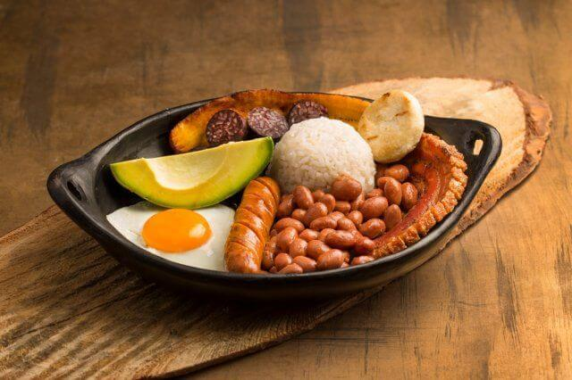
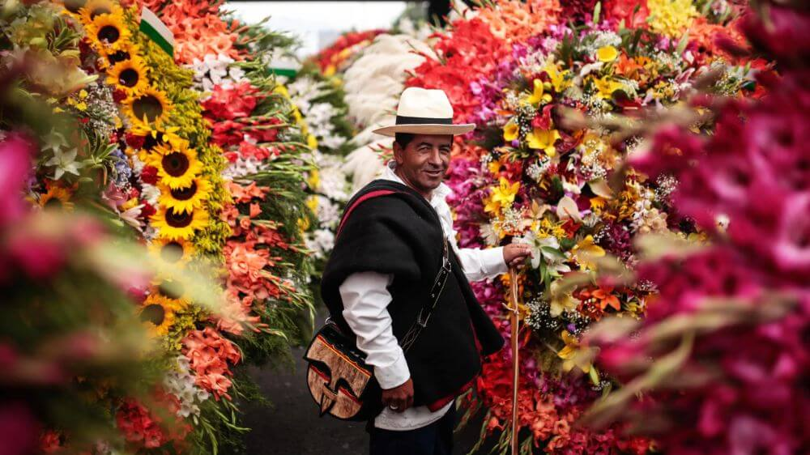
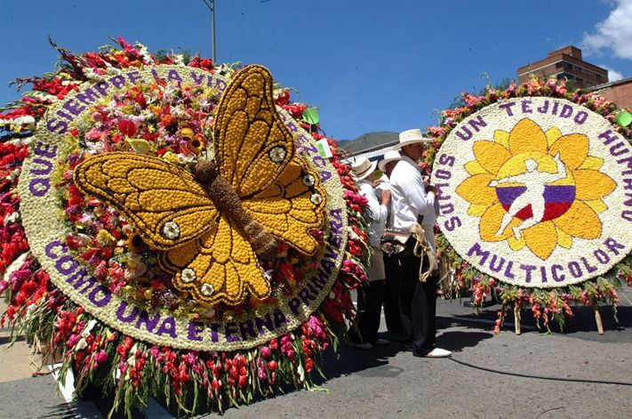
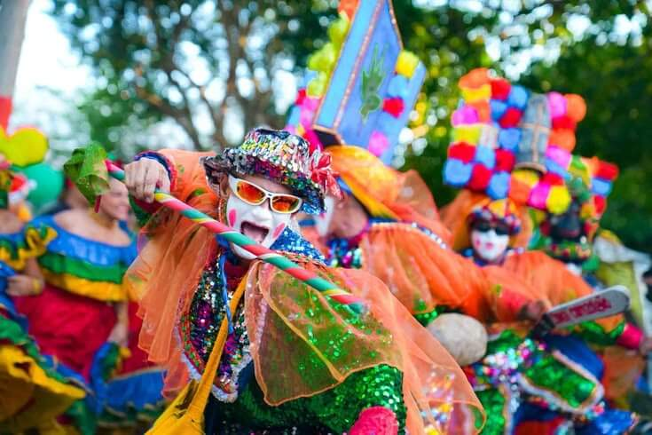
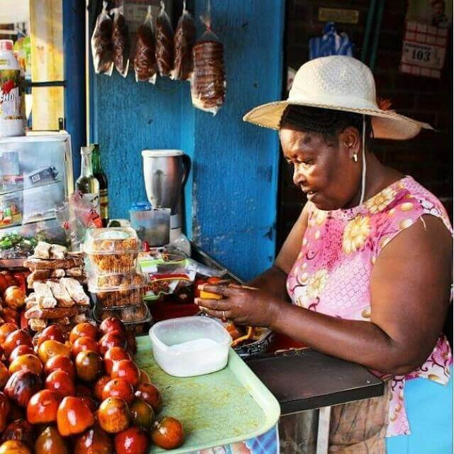
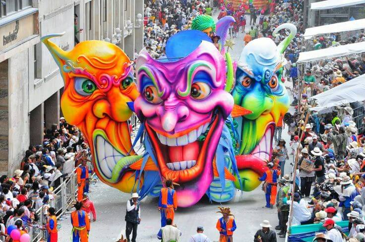
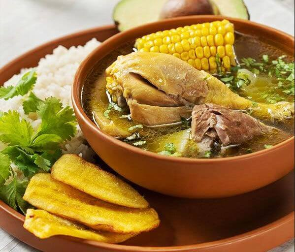
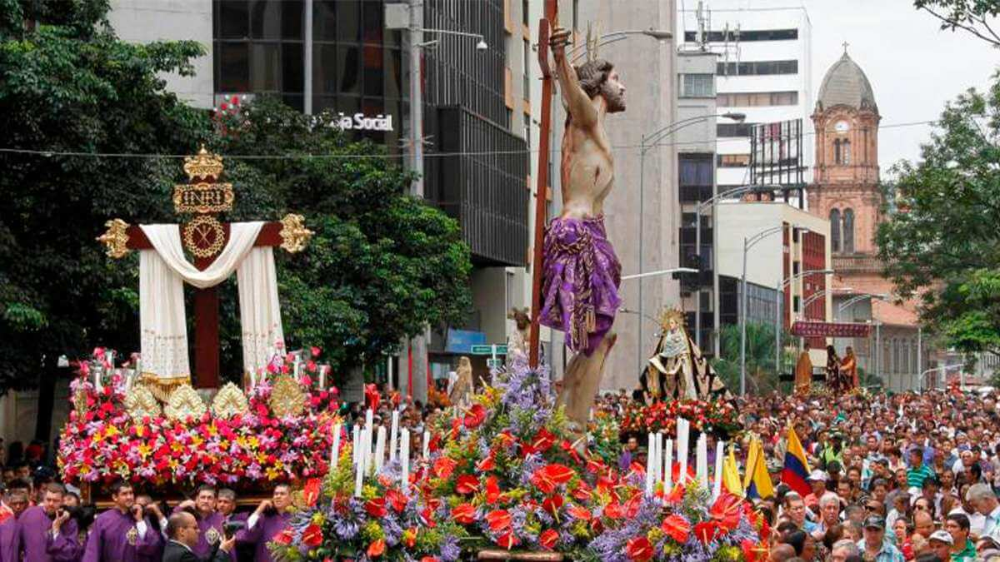
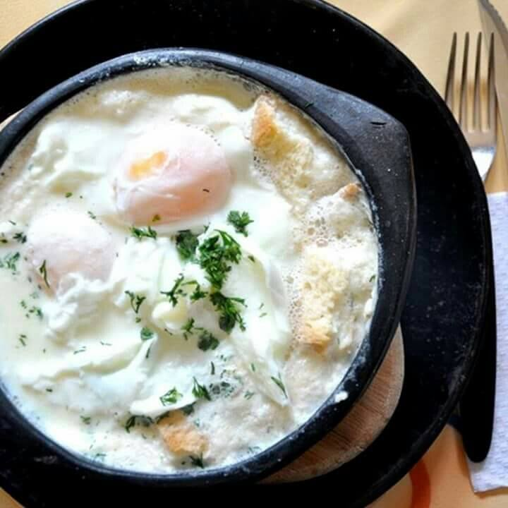

Nuestra Riqueza en Imágenes
Una recopilación visual de los sabores, colores y tradiciones que hacen única a nuestra tierra.








Una recopilación visual de los sabores, colores y tradiciones que hacen única a nuestra tierra.








